About
Melodee is multi-engine synthesizer and sequencer firmware for the M-VAVE FM-1. After you install it, the unit runs Melodee instead of the official firmware: four tracks, each with one instrument, a 64-step sequencer with patterns and songs, effects, and USB MIDI and audio.
The selectable engines are Prophet, FM6, CZ-1, SID and Drum. Melodee is based on Felucca; it is not affiliated with or endorsed by M-VAVE or Hügelton Instruments. Report Melodee problems on the Melodee GitHub, not to Felucca.
Before you install
You need Chrome or Edge, a data USB cable plugged straight into the computer (not a charge-only cable or hub if you can avoid it), and the FM-1 powered and connected.
- The installer can also install/restore the official stock M-Vave firmware V15. It saves a complete Melodee backup first when it can.
- Before installing or downgrading, export anything you care about: projects, Prophet programs, FM6 and CZ-1 native slots. A downgrade or skipped backup can lose Melodee music, sounds and settings.
- Melodee is a field-testing release with no warranty. Use at your own risk.
Installing
Open the web installer in Chrome or Edge, connect the FM-1, and press Install. Leave the cable connected until writing finishes. When it succeeds, the FM-1 reports Melodee’s product identity (for example FM-1_9xxxx).
Two builds ship with each release:
- Standard (dual core) — default. Uses both cores; Prophet can play up to eight voices per track.
- Single core — choose this if Standard crashes, freezes, or restarts into update mode. The second core never starts; Prophet plays up to five voices, and heavy FM6 or Prophet sounds hit the CPU limit sooner. Features and project format are the same. Install Standard again to return to dual core.
From a terminal you can also run tools/fm1_install.py (see the project README).
The panel
| Control | Job |
|---|---|
| Piano Keys | Play notes on the selected track. In layers and grids they also select patterns, effects, roots and drum lanes. |
| KNOB 1–4 | Edit the four controls on the open page, or Stage’s four sound knobs. |
| MASTER KNOB | Overall output volume. |
| ALGORITHM KNOB | Change the selected track 1–4 on every page; the screen takes that track’s color. |
| PRESETS KNOB | Browse sounds; on engine EDIT pages, jump between sections (or pick the operator / line); on NOTES, zoom. |
| SELECT KNOB | Turn the pages within the open section, both ways. |
| FX SEL ENV LFO EDIT GLO ARP SEQ | Open that family’s pages; press again for the next page. |
| HOME | Return to Stage. Hold for the global settings menu. |
| SAVE | Tap for PRESETS / USER / PROJECT. Hold for undo. |
| PLAY/STOP | Start and stop all four tracks. |
| REC | Arm or disarm the selected track. Hold to capture (or take a jam on SONG). |
| OCT− OCT+ | On Stage: shift octave (both together reset). In menus and everywhere else: go back / enter or confirm. |
Key and button lights share one grammar: dark nothing there, dim something there, bright happening now, slow pulse waiting (for example REC armed but stopped, or a pattern queued for the loop end). The menu’s LIGHTS sets how bright idle indicators are.
Stage
HOME is Stage: the live performance screen. Each track has a lane with its sound name, pattern (and the next one while it waits for the bar), a small step grid, and level. The header shows tempo, a REC mark, and an octave badge such as +2 or −1.
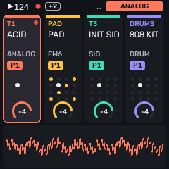
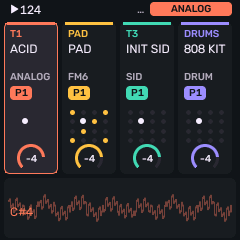
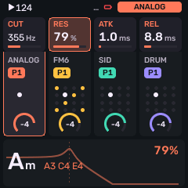
Turn the selected track’s knobs and its four sound knobs appear over the waveform. What they do depends on the engine:
| Engine | KNOB 1 | KNOB 2 | KNOB 3 | KNOB 4 |
|---|---|---|---|---|
| Prophet | CUTOFF | RES | filter env amount | amp release |
| FM6 | MLVL | MRAT | MEG | DTUN |
| CZ-1 | WAVE | DCW | DETUNE | VIBRATO |
| SID | WAVE | PW | CUT | RES |
| Drum | TUNE | TONE | DECY | SNAP |
On a Drum track, lanes light as they hit. Hold OCT+ for the Stage sheet: Init sound, Save as user…, Favourite, Undo last load, Sound designer.
Tracks
Four tracks, one instrument and sound each. ALGORITHM selects the track on every page; the screen takes that track’s color (coral orange, amber yellow, mint green, lilac purple).
- Each track carries its own engine, sound, patterns, scale ROOT and transpose, effect sends, modulation and voice settings.
- Mixing and solo live under GLO — see Global for MIXER, GLOBAL and SYSTEM.
- Voice counts: FM6 up to 16 voices; Prophet up to eight per track on Standard (five on Single core or if the second core is unavailable). Running several full Prophet tracks together has not been stress-tested on every unit, and is not recommended.
Sounds
Turn PRESETS (or open SAVE → PRESETS) to browse. KNOB 1 chooses the list and KNOB 2 (or keep turning PRESETS) chooses a sound. Factory presets come first per engine, then that engine’s native user slots, then general user slots.
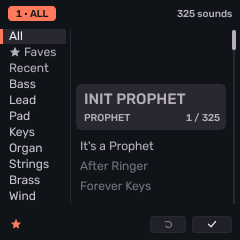
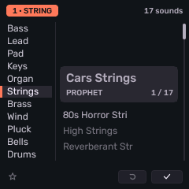
| Control | What it does |
|---|---|
| KNOB 1 LIST | Choose the list — categories (BASS, LEAD, PAD, …), FAV, or RECENT. |
| KNOB 2 / PRESETS | Scroll sounds. While the list moves fast, the sound loads when the knob rests. |
| KNOB 3 FAV | Mark or unmark the current sound as a favourite (device favourites survive power-off). |
| KNOB 4 ENGINE | Change the engine and start from its init sound (dry, nothing changed): INIT PROPHET, FM6 INIT VOICE, INIT TONE, INIT SID, or the 808 kit. |
| OCT+ / OCT− | Keep the browsed sound / revert to the one you had. |
- Knobs accelerate on a spin; MENU → KNOB ACCEL OFF keeps every detent one step.
- Hold SAVE to return to the sound you had before browsing. Loading a sound never changes your patterns.
- Hold OCT+ on Stage or a sound page for the sheet: Init sound, Save as user…, Favourite, Undo last load, Sound designer.
Saving sounds
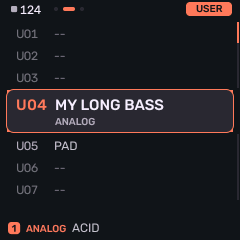
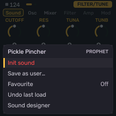
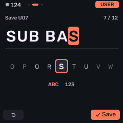
Stop, tap SAVE, choose USER, pick a slot with KNOB 1/KNOB 2, press OCT+ for the sheet (Load, Save here, Rename, Erase), choose Save here, then OCT+ again. Name it on the NAME screen.
- Prophet / FM6 / CZ-1 save into that engine’s native bank (P / F / Z slots): the tone only. Effects, shared envelopes, modulation and patterns are untouched when you load a native slot.
- General slots U01–U64 are for engines without a native bank (SID, Drum, and similar).
NAME screen
| Control | What it does |
|---|---|
| White keys | Type letters, multi-tap like a phone keypad (press again within the window to step A → B → C). |
| Black keys | Switch mode: ← , SPACE , → , DEL (and 123 for numbers). |
| KNOB 1 | Move the cursor. |
| KNOB 2 | Change the character under the cursor. |
| OCT+ / OCT− | Save the name / cancel. Up to 12 characters (native banks allow longer). |
Projects
Four project slots A–D, plus a template and a new-song wizard. Open SAVE → PROJECT. A project holds all 32 pattern banks, timing, arrangement, automation, native voices where used, and related settings (FBKG format).
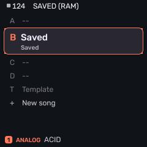
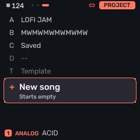
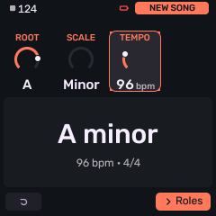
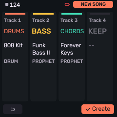
| Control | What it does |
|---|---|
| KNOB 1 SLOT | A, B, C, D, TMPL (template), or NEW past the template. |
| KNOB 2 BOOT | OFF or A–D — which project loads at power-on. BOOT OFF with a saved template uses the template. |
| KNOB 3 LOAD | GO to load the chosen slot. |
| KNOB 4 SAVE | GO to save into the chosen slot. |
| OCT+ | The slot’s sheet: Load, Save here, Rename, Boot, Erase (Erase asks first). |
- NEW opens the wizard: set key, scale and tempo (KNOB 1 ROOT, KNOB 2 SCALE, KNOB 3 TEMPO), then a role per track (KEEP, DRUMS, BASS, CHORDS, LEAD, PAD) on the four knobs. Patterns start empty.
- TMPL: save your current sounds and settings as the template for new projects (empty patterns).
- SAVE+REC writes the project back to its slot (
SAVED B, and so on), stopping the transport first. A new project opens PROJECT on a free slot. - Autosave: stopped and untouched for five seconds (no key, button, knob or MIDI), a project that already has a slot saves itself when it changed.
Engines
Selectable instruments: PROPHET, FM6, CZ-1, SID, DRUM. Press EDIT for that engine’s pages; press again or use SELECT to move through them. On engines with several sections, PRESETS jumps between sections (and on FM6 / CZ-1 picks the operator / line). Hold EDIT for a quick map of sections on the white keys (on FM6, black keys pick operators).
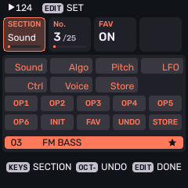
Retired engines (PHASE, VOICE, NOISE, TRIO, WHEEL, PHYS, and others) stay silent if an old project still names them; their saved values remain. Choose another sound to play again. Ranges below are the device’s own; the same values appear in the web editor.
Prophet
Melodee’s own Prophet-5–style engine. Factory programs from Sequential’s Prophet-5/10 SysEx.
Sequential Prophet-5 Rev 4–style programs: two oscillators (saw, pulse; B also triangle), hard sync, mixer, SSI or Curtis four-pole filter, separate filter and amp envelopes, Poly-Mod, LFO, wheel, unison, glide and Vintage. PRESETS browses INIT, Sequential’s 200 factory programs, then native user slots P001–P128. Navigate between sections/pages with PRESETS knob, Navigate between individual settings per page (e.g. OSC A vs OSC B), with SELECT knob. In the SECTION map, navigate with Knob 2, and select a section to jump to with OCT+.
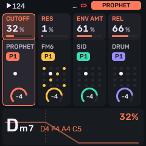
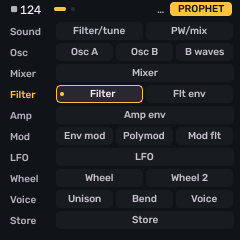
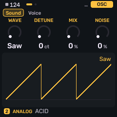
Oscillators
| Page | Controls |
|---|---|
| OSC A | FREQ A (pitch, semitones), SAW A (on/off), PULSE A (on/off), WIDTH A (pulse width). |
| OSC B | FREQ B (semitones), FINE B (fine detune), WIDTH B, KEY B (B tracks the keyboard on/off). |
| B WAVES | SAW B, TRI B, PULSE B (on/off), LOW B (B becomes an LFO: low frequency oscillator). |
Mixer and filter
| Page | Controls |
|---|---|
| MIXER | OSC A level, OSC B level, NOISE level, SYNC (hard-sync B to A). |
| FILTER | CUTOFF, RES (resonance), KEY (keyboard tracking OFF / HALF / FULL), MODEL (SSI or CURTIS four-pole). |
Envelopes
| Page | Controls |
|---|---|
| FLT ENV | ATK (attack), DEC (decay), SUS (sustain), REL (release) for the filter envelope. |
| AMP ENV | ATK, DEC, SUS, REL for the amplifier. |
| ENV MOD | ENV AMT (the amount to open the filter, following the envelope's shape), VEL FLT (velocity → filter), VEL AMP (velocity → level), RELEASE (release stage of both amplifier and filter envelopes toggle on/off). |
Poly-Mod, LFO and wheel
Two separate modulation paths. Poly-Mod takes the filter envelope and/or Oscillator B as sources and routes them into Osc A’s pitch, pulse width, and the filter. Osc B can do this even when its mixer level is zero, so it works as a pure modulator (audio-rate or low-rate with LOW B). The LFO / wheel path is independent: the LFO (and optional noise) is the source; its depth is INITIAL plus the MIDI mod wheel (CC 1), then you choose destinations on the WHEEL pages.
| Page | Controls |
|---|---|
| POLYMOD | Sources (amounts): ENV AMT (filter envelope), OSC B. Destinations (on/off): FREQ A (Osc A pitch), PW A (Osc A pulse width). |
| MOD FLT | FILTER (Poly-Mod destination: filter cutoff, on/off). Also VINTAGE (component drift), AT FLT (aftertouch → filter), AT LFO (aftertouch → LFO depth). |
| LFO | Shapes the wheel-path source: RATE, and waveform SAW / TRI / SQUARE (on/off). |
| WHEEL | Depth: INITIAL (always-on amount; mod wheel CC 1 adds on top), N MIX (blend noise into the LFO). Destinations (on/off): FREQ A, FREQ B (→ oscillator pitch). |
| WHEEL 2 | More destinations (on/off): PW A, PW B (→ pulse width), FILTER (→ cutoff). GLIDE is portamento time (not a modulation destination). |
Voice and store
The Voice section has Prophet’s own UNISON and BEND pages, plus Melodee’s shared VOICE list for the track (poly/mono, glide, priority, pan, mute). UNISON is not the VOICE page — VOICE is the list of global engine voice settings. Loading or editing UNISON copies into Melodee’s VCE / PRIO / DTUNE / ALLOC; you can override those afterwards on VOICE. Program glide stays on WHEEL 2; VOICE’s GLD is Melodee’s track portamento.
| Page | Controls |
|---|---|
| UNISON | UNISON (on/off), VOICES (1–5), DETUNE (0–7), note PRIORITY (LOW / LOW RET (retrigger) / LAST / LAST RET). |
| VOICE | List (KNOB 2 row, KNOB 1 value): VCE (POLY / MONO / LEG / UNI), GLD (glide time), GLMOD (RATE / TIME), PRIO (LAST / LOW / HIGH), ALLOC (ROT / REUSE), DTUNE, PAN (−100…+100%), MUTE, SPRD (stereo spread). Same shared page as other engines — see Voice. |
| BEND | BEND (pitch-bend range, 1–12 semitones). |
| STORE | SLOT (P001–P128), STORE, SEND, INIT. Controls whose required waveform or switch is off are drawn dim; they stay editable. |
FM6
Uses msfa from Dexed (Google Inc., Pascal Gauthier).
Six-operator FM (Dexed / DX7–compatible): 32 algorithms with an on-screen chart, per-operator frequency, levels, envelopes and scaling, pitch envelope, LFO, and controller / portamento settings. On operator pages, PRESETS picks the operator; black keys do the same under a held EDIT. Native slots F001–F064; DX7 librarians can send 32-voice banks over USB into F001–F032 or F033–F064.
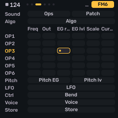
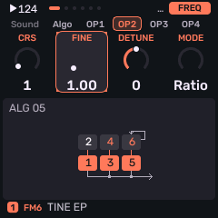
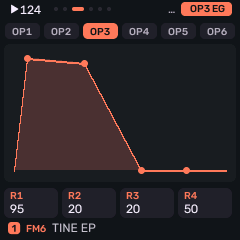
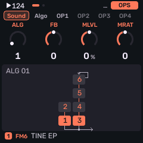
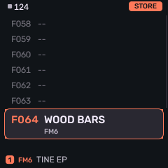
Voice
| Page | Controls |
|---|---|
| ALGO | ALG (algorithm 1–32), FB (feedback 0–7), SYNC (oscillator key sync), TRNS (transpose, ±24 semitones). |
| PITCH EG | R1–R4: pitch envelope rates. |
| PITCH LV | L1–L4: pitch envelope levels. |
| FM LFO | WAVE (TRI / SAWDN / SAWUP / SQR / SIN / S&H), SPEED, DELAY, KSYNC (key sync). |
| FM LFO 2 | PMD (pitch mod depth), AMD (how much the LFO wobbles amplitude — global amp-mod depth), PMS (pitch mod sensitivity 0–7). |
Per operator
| Page | Controls |
|---|---|
| FREQ | CRS (coarse ratio, or Hz in FIXED), FINE, DTN (detune ±7), MODE (RATIO / FIXED). |
| OUT | OUT (output level 0–99), VEL (velocity sensitivity 0–7), AMS (how much this operator follows amp mod, 0–3; see below), ON (operator on/off). |
| EG RATE | R1–R4: envelope rates (0–99). |
| EG LVL | L1–L4: envelope levels (0–99). |
| SCALE | Keyboard level and rate scaling. BRK (break point — at this note, level is unchanged), LDEP / RDEP (how strongly level changes left / right of BRK, 0–99; 0 = off), RSCL (rate scaling 0–7: higher keys run the envelope faster). |
| CURVE | LCRV / RCRV: shape and direction of level scaling on each side of BRK (−LIN / −EXP lower the operator’s level as you move away; +EXP / +LIN raise it). Depth (LDEP / RDEP) sets how much; the curve’s sign sets which way. |
AMS is not the operator envelope (that’s EG RATE / EG LVL). It’s DX7-style amplitude modulation sensitivity: how strongly this operator’s level follows amp mod from the LFO’s AMD, or from controllers routed to amplitude (wheel / breath / aftertouch with destination A). AMD sets how much amp wobble exists; AMS (0 = ignore, 3 = strongest) sets whether this operator hears it. Use it for tremolo on a carrier, or put AMS on a modulator so the LFO breathes the brightness instead of the overall volume.
SCALE and CURVE are DX7-style keyboard level scaling: they raise or lower that operator’s output as you play above or below BRK. Classic use: −LIN or −EXP on the right so high notes get quieter, or so a modulator thins out and the sound gets less bright up the keyboard.
Controllers (per track, saved with the project)
| Page | Controls |
|---|---|
| FM BEND | BEND+ / BEND− (bend range up / down, 0–12 st), STEP (bend step), DXVEL (DX velocity curve on/off). |
| FM PORTA | PORTA (PEDAL / ON), TIME, GLISS (glissando on/off), ENGINE (MODERN / MARK I / OPL — algorithms 4 and 6 use longer feedback loops in MARK I). |
| FM WH/FT | WHEEL range, W.DST (wheel destination: P / A / E combinations), FOOT range, F.DST. |
| FM BR/AT | BRTH (breath) range and B.DST, AFTER (aftertouch) range and A.DST. |
| STORE | SLOT (F001–F064), STORE, SEND, INIT. |
CZ-1
Phase-distortion core after MAME’s uPD933 model by Devin Acker. Factory tones from Casio.
Native Casio CZ-1 tones: two lines with waveforms and windows, ring and noise, detune, vibrato, and six eight-step envelopes (pitch, wave, amp × two lines). Factory: Casio’s 64 presets (A-1 BRASS 1 … H-8 TYPHOON SOUND). Native slots Z001–Z128. Values that do nothing on the current tone are drawn dim but stay editable.
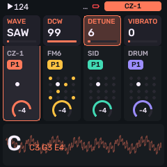
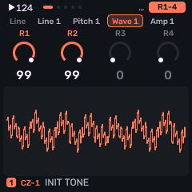
Common
Every tone is built from one or two lines. A line is a DCO → DCW → DCA chain: pitch, then phase-distortion (timbre), then amplitude — each with its own eight-step envelope. Common pages set how the lines combine, plus shared detune, vibrato and windows. PRESETS picks which line’s pages you are editing when you are in the per-line section.
| Page | Controls |
|---|---|
| CZ TOOLS | NAME (16-character tone name; OCT+ to edit), 1 > 2 / 2 > 1 (copy one line’s wave, window, key follow, level, velocity and all three envelopes onto the other — MOD stays with line 1 and is not overwritten), COMP (swap the edited tone with the snapshot taken before your first edit on this track; “NO EDITS” if you have not changed anything yet). |
| CZ LINE | LINE chooses how many oscillators sound: LINE1 or LINE2 alone (the unused line’s params are drawn dim), 1+2 (both lines with their own settings), or 1+1 (two voices that both use line 1’s params — line 2’s own wave/envelopes are unused, but detune and MOD can still affect the second oscillator). MOD mixes the two lines when more than one is active: OFF (sum), RING (multiply line 1 × line 2), or NOISE (randomly stretch line 2’s phase — a noise-modulated second line). OCT is a global pitch offset (0 = −1 octave, 1 = unison, 2 = +1 octave). |
| CZ DETUNE | Pitch offset for line 2 only: SIGN (±), OCT (0–3 octaves), NOTE (0–11 semitones), FINE (0–60). Inactive (dim) in LINE1 mode; SIGN only matters when some detune is set. Use with 1+2 or 1+1 for chorusing, intervals, or beating. |
| CZ VIBRATO | A pitch LFO shared by the tone: WAVE (TRI / SAW UP / SAW DN / SQR), RATE (speed), DEPTH (amount — set this above 0 or the vibrato is silent and WAVE / RATE / DELAY go dim), DELAY (wait after note-on before the vibrato fades in). |
| CZ WINDOW | A repeating amplitude mask inside every oscillator cycle, for as long as the note plays. WAVE picks the phase-distortion carrier shape; WINDOW then fades that carrier up/down within each period (like a tiny amp envelope that retriggers on every cycle). That changes the waveform’s silhouette and spectrum; OFF leaves the cycle flat (no extra shaping). SAW DN, TRIANGLE, TRAPEZ, HALF SAW, 2 SAW UP, 2 SAW 6 and 2 SAW 7 are different masks. LINE1 and LINE2 each have their own. This is separate from the WAV envelope (which moves DCW / timbre over the note) and the AMP envelope (overall loudness over the note). |
Per line (LINE 1, LINE 2)
Each line has a waveform page, a touch (level / velocity) page, and three envelopes: PIT (pitch / DCO), WAV (wave depth / DCW — the phase-distortion amount that brightens or darkens the tone), and AMP (loudness / DCA). These are Casio-style rate/level multi-stage envelopes, not ADSR.
| Page | Controls |
|---|---|
| WAVE | WAVE is the primary carrier (SAW, SQUARE, PULSE, NULL = silent, DBL SINE, SAW-PULS, MULTISIN for a resonance-like spectrum, PULSE2). WAVE2 is an optional second carrier (same set, plus OFF): when on, the line alternates WAVE ↔ WAVE2 each phase wrap. W.KEY (0–9) is DCW key follow — higher notes get less wave/timbre depth (bright → darker up the keyboard). A.KEY (0–9) is DCA key follow — higher notes run the amp envelope faster (shorter notes up the keyboard). |
| TOUCH | LEVEL (1–15) is the line’s output level. V.PIT / V.WAV / V.AMP (0–15) set how much MIDI velocity scales pitch, wave depth and amp — soft notes pull those paths down. (The FM-1’s own keys send fixed velocity; velocity matters over MIDI or from the sequencer.) |
| PITCH / WAVE / AMP envelopes | The envelope shape of the CZ-1 is controlled by eight rates R1–R8 (how fast the envelope moves toward each step’s level — higher = faster) and eight levels L1–L8 (0–99 targets). END (1–8) is the last active step: the envelope only runs through END, and the END step always targets 0 (release to silence; its level value is ignored). SUS selects which level is the sustain step while the key is held; on release the envelope jumps past SUS and finishes through END → 0. SUS must sit before END (otherwise it shows “−” = no sustain). With no SUS, the whole path keeps playing after note-off — useful for long rings. Rates after END and levels at/after END are inactive (dim). Each line has its own Pitch, Wave and Amp envelopes (six envelopes total). |
SID
Uses reSID by Dag Lem, including measured combined-waveform tables from a real 6581 and 8580.
Probably the simplest synth engine (in terms of numbers of parameters to program) on the device; use this if you're looking to dial in a quick sound. It models a Commodore MOS 6581 / 8580 chip per note: waveforms, pulse width, ring, sync, combined waves, the chip’s ADSR, filter and drive. Thirty-two factory presets. Stage knobs: WAVE, PW, CUT, RES.
| Page | Control | What it means |
|---|---|---|
| CHIP | MODEL | 6581 or 8580 chip model. |
| WAVE | TRI, SAW, PULSE, NOISE, or a combined wave (TRI+SAW, TRI+PLS, SAW+PLS, T+S+P). | |
| STACK | Second-oscillator stacking: ONE, DETUNE, OCT, FIFTH, MAJOR, SYNC, RING, SUB. | |
| PW | Pulse width. | |
| FILTER | CUT | Filter cutoff. |
| RES | Resonance (0–15). | |
| MODE | LP, BP, HP, NOTCH, LP+BP, BP+HP, ALL, or OFF. | |
| DRIVE | Input drive into the filter. |
Drum
808 kit: Hügelton’s TR-808 circuit models. 909 kit: the schwung module 9W9 by AThousandDetails (after ER-99), ported via Charles Vestal’s x0x.
Synthesized TR-808 and TR-909 kits on the General MIDI key map. The DRUM EDIT pages have Sound (KIT / HIT macros), Drum (per-instrument Sound and Mix), Lanes and Voice tabs. On Sound and Mix, white keys pick which drum you are editing; the knobs then shape that drum.
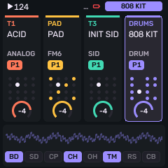
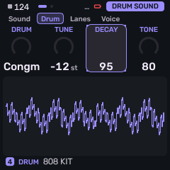
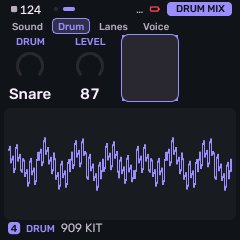
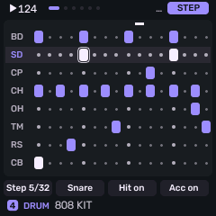
Kit macros (Sound section)
These four-knob pages shape the whole kit at once (also the Stage knobs for TUNE, TONE, DECY and SNAP).
| Page | Controls |
|---|---|
| KIT | KIT (808 or 909), TUNE (overall pitch), TONE (overall character / brightness), DECY (overall decay). |
| HIT | SNAP (snare snappy / noise amount), ACC (how strongly velocity changes level — the circuits alone only move about 2 dB from soft to hard), KICK (PUNCH keeps the bass-drum attack click; ROUND softens it), DRV (drive into a soft clip, level kept). |
Per drum (Drum section)
Pick a drum on the white keys, then offset that instrument from the kit macros.
| Page | Controls |
|---|---|
| DRUM SOUND | DRUM (which instrument), TUNE, DECAY, and TONE (or SNAPPY on the snare; ATTACK on 909 kick / toms). |
| DRUM MIX | LEVEL for the picked drum. |
| LANES | Levels for KICK, SNARE, CLAP, HATCL (closed hat). |
| LANES 2 | Levels for HATOP (open hat), TOM, RIM, BELL. |
Stage knobs: TUNE, TONE, DECY, SNAP. The SEQ sequencer drum grid uses white keys for steps and black keys to select which lane; recorded takes use the same NOTES piano roll as other engines after recording stops. A recorded hit can keep its own pitch and length (see Notes and DRUM HIT).
Voice
All synthesis engines have a VOICE settings page, with the same options regardless of engine. This includes shared voice allocation and tuning for the track, under EDIT → VOICE (a list; KNOB 2 moves the row, KNOB 1 sets its value). Prophet and FM6 also have their own voicing pages; VOICE still sets poly/mono mode, glide, priority, pan, mute and spread for them.
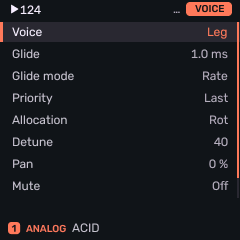
| Row | Values | What it means |
|---|---|---|
| Voice | POLY / MONO / LEG / UNI | Play the instrument polyphonically (multiple tones at the same time), monophonic (only one tone at a time), legato (single voice but don't retrigger envelopes when you change note), or unison (monophonic playback using multiple voices thickened together). |
| Glide | time | Glide (portamento) time. |
| Glide Mode | RATE / TIME | Glide follows a fixed rate or a fixed time. |
| Priority | LAST / LOW / HIGH | Note priority when voices run out. |
| Allocation | ROT / REUSE | Rotate through voices, or reuse the same one. |
| Detune | 0–127 | Detune between stacked / unison voices. |
| Pan | −100…+100% | Track pan. |
| Mute | OFF / ON | Mute the track. |
| Spread | 0–100% | Stereo spread of stacked / unison voices. |
Envelopes and modulation
Shared Melodee modulation, separate from each engine’s own envelopes where those exist. Press ENV for ENV and ENV DEST, LFO for the LFO and MOD pages.
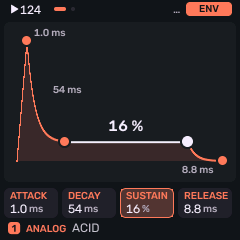
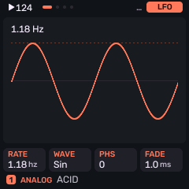
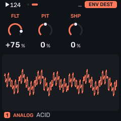
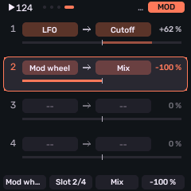
| Page | Controls |
|---|---|
| ENV | ATK (Attack - how loud to make the start of a sound), DEC (Decay - how loud the sound goed down after its initial peak), SUS (Sustain - how loud to play the note while the key is pressed down), REL (Release - how long to fade the sound out after a note is released) — shared amp envelope. |
| ENV DEST | FLT, PIT, SHP — envelope amount to filter, pitch and wave shape (±). |
| LFO | RATE (speed), WAVE (SIN / TRI / SAW / SQR / S&H) (type of wave), PHS (phase), FADE (fade-in). |
| LFO 2 | SYNC (OFF, 4BAR…1/32 tempo divisions), TRIG (NOTE / FREE), Polarity (Bidirectional up and down in amount, or Unidirectional only). |
| LFO DEST | pitch, filter, wave shape (±), amp amount . |
MOD matrix
Four routes. KNOB 2 picks the route (1–4); KNOB 1 sets its source, KNOB 3 its destination, KNOB 4 the amount (±).
| Field | Choices |
|---|---|
| SRC | OFF, LFO, ENV, VEL, KEY, RAND, MODW (mod wheel), AT (aftertouch), EXPR (expression), S&H, SLEW. |
| DST | OFF, PITCH, CUT, SHP, AMP, PAN, DIST, CHO, DLY, REV, RATE, VIB, E1–E8 (engine macros, shown with the engine’s labels), DEPTH. |
| AMT | −100…+100%. |
Edit Prophet, FM6 and CZ-1 envelopes on those engines’ EDIT pages (and in the web editor). Hold LFO while turning sound or effect knobs for temporary changes that restore when you release (or keep with OCT+).
Effects
Press FX and turn SELECT through the effect pages. Each track has its own sends; the delay and reverb buses are shared, and a master limiter sits on the output.
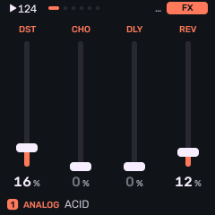
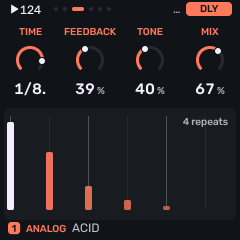
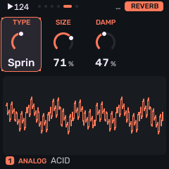
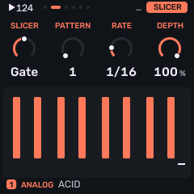
| Page | Controls |
|---|---|
| FX | DST (distortion), CHO (chorus send), DLY (delay send), REV (reverb send) — for the selected track. |
| SLICER | SLCR (OFF / GATE / STUT), PAT (pattern 1–16), RATE (1/8…32T), DEPTH — a tempo-synced 16-step gate or stutter. |
| DLY | TIME (division, incl. dotted and triplet), FDBK (feedback), TONE (color), MIX. |
| DLY 2 | TYPE (DIGI / TAPE / DG-PP / TP-PP ping-pong), WEAR (tape wear). |
| REVERB | TYPE (ROOM / SPRING / HALL), SIZE, DAMP. |
| CHORUS | CRT (rate), CDP (depth). |
Older projects that predate the delay’s return load with delay sends at zero until you raise them.
Performance effects
Hold FX (or lock it with a double-press) for punch-in effects on the keys.
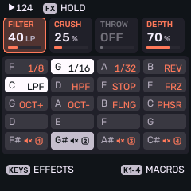
White keys default to repeat (1/8 · 1/16 · 1/32), reverse, Low Pass Filter (LPF), High Pass Filter (HPF), tape stop, freeze, OCT UP / OCT DN (harmonizer with shimmer), flanger and phaser. Hold a white key and turn PRESETS to remap it; EDIT restores the default. Black keys mute tracks while held (not saved with the preset).
- The knobs are performance macros only (FILTER, CRUSH, THROW, DEPTH / shimmer) — they do not rewrite the saved sound.
- MENU → FX LATCH: tap to toggle instead of hold. FX+OCT− clears latched effects.
- Double-press FX within ~300 ms to keep the layer open with both hands free; press FX again to close.
Scales and chords
Press SEL for SCALES, again for the SEL settings list, again for CHORD. Hold SEL for a quick layer: keys set ROOT; knobs set ROOT / scale / chord / voicing.
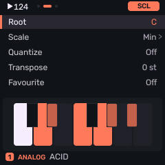
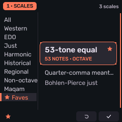
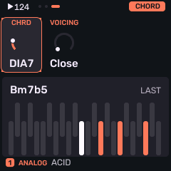
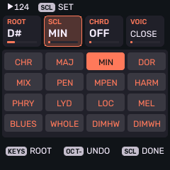
| Page / control | What it does |
|---|---|
| SCALES | KNOB 1 family (or ALL / FAV), KNOB 2 scale, ROOT, QNT. PRESETS also browses scales. Seventy scales including microtonal equal divisions, just intonation, temperaments, maqam models and Bohlen–Pierce. |
| SEL | ROOT (per track), scale favourite, QNT, TRN (transpose ±24 semitones). |
| CHORD | CHRD (OFF, DIA3, DIA7, MAJ, MIN, DOM7, MAJ7, MIN7, SUS4, POW) and VOIC (CLOSE, OPEN, INV1, INV2, +OCT). |
QNT: OFF (chromatic), SNAP (every key, rounded down to the scale), WHITE (white keys only; black silent), ALL (every key is the next scale degree), MPC (for an Akai MPC pad controller). With QNT MPC, Bank H pads H01–H16 (MIDI notes 20–35, MPC Sample’s default map) play successive scale degrees instead of fixed pitches — so you can play the scale in order across the pad grid. When QNT is MPC, a DEG control appears: it sets which scale degree pad H02 plays; H01 is one degree below that, H03 one above, and so on through H16. Incoming MIDI follows WHITE, ALL and MPC the same way the keys do. SEL, QNT and DEG are shared by all tracks; ROOT and TRN (transpose) are per track. Chord keys work on the keys, MIDI in, recording and the arpeggiator. Drum kits keep their own key map.
Arpeggiator
The beat light follows the arp when it runs.
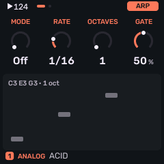
| Page | Controls |
|---|---|
| ARP | MODE (Off, Up, Down, Up then Down, Random, Order as played, Repeat), Rate (note division), Octave (1–4), Gate (note length %). |
| ARP 2 | SWG (swing), PROB (probability each step plays), HOLD (keep arpeggiating after release), ORD (ordered by NOTE pitch or PLAY order). |
Sequencer
Press SEQ for the sequence family; press again or turn SELECT through the pages. Patterns are up to 64 steps; divisions run from 1/32 to 4 bars. PLAY starts and stops; REC arms the selected track without starting the transport; REC+PLAY arms and starts recording together.
| Page | What it does |
|---|---|
| NOTES | Edit entered steps and recorded takes (piano roll; drum grid on Drum). |
| PATTERN | How long the selected track’s loop is, how fast its steps run, and its own swing and note length. |
| TEMPO | Project speed (BPM) and song swing; optional playback snap for recorded takes on the selected track. |
| PATTERNS | Four tracks × eight patterns at once. |
| SONG | Arrangement of sections. |
| MOTION | Knob automation for the selected pattern (shown once that pattern has some automation saved). |
| DRUM HIT | On a Drum track: the macros of a selected recorded hit. |
PATTERN and TEMPO
Think of a pattern as one looping phrase on one track — a drum groove, a bass line, a chord stab. PATTERN sets how that loop is built for the selected track. TEMPO sets how fast the whole song runs, plus a song-wide groove feel. Each track can still have its own pattern length, step size, swing and note length, so the four parts need not line up the same way.
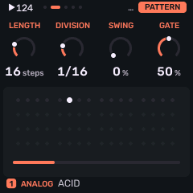
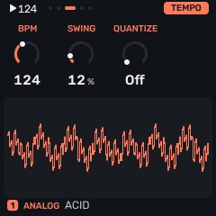
Pattern
| Control | What it does |
|---|---|
| LEN | How many steps before the pattern repeats (1–64). Sixteen steps at 1/16 is one bar of common 4/4; eight steps is a half-bar loop; longer lengths stretch a phrase across more bars. |
| DIV | How long each step lasts relative to the beat: 1/4, 1/8, 1/16, 1/32, triplets (8T, 16T), or slower spans (1/2, 1/1, 2BAR, 4BAR). Finer divisions pack more events into the same time; coarser ones make each step last longer. |
| SWG | Swing for this track’s pattern: delays the even-numbered steps so the rhythm leans instead of sitting dead straight. 0% is even; raise it for a shuffled or “swung” feel. Independent of song swing on TEMPO. |
| GATE | How long manually entered steps stay on, as a percentage of the step. Low values are short and clipped; high values are sustained (ties and recorded note lengths still follow what you played or edited). |
Tempo
| Control | What it does |
|---|---|
| BPM | Song speed in beats per minute (40–240). Saved with the project. With the internal clock you can also tap tempo from the GLO hold layer. |
| SWG | Song swing: a project-wide lean applied on top of timing. Use this when every track should share the same groove; use PATTERN SWG when only one part should shuffle. |
| QNT | Playback quantize for recorded takes on the selected track: OFF keeps your original timing; choose a grid (1/4 … 4BAR) to snap playback to that swung grid. The piano roll still shows the original take — turn QNT off anytime to hear it again. This is separate from scale QNT on SEL. |
Capture into an empty pattern can set LEN for you (1, 2 or 4 bars) — see Recording.
Notes
SEQ → NOTES is the editor for manual steps and recorded takes. The highlighted note has a bright outline; the playhead is a separate line. Recorded notes keep their original timing beside ordinary steps and tie tails.
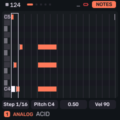
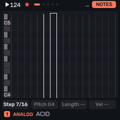
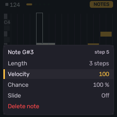
| Control | What it does |
|---|---|
| KNOB 1 STEP | Walk every interval, including empty ones and each pitch of a chord. |
| KNOB 2 PITCH | Change pitch; on an empty manual step, insert a note. Keys and MIDI enter notes or chords when stopped (then advance when released). |
| KNOB 3 LENGTH | Resize. Hold ENV for fine 1/16-step adjustments on recorded notes. |
| KNOB 4 VEL | Velocity 1–127. Hold ENV and turn KNOB 4 for SLIDE on a manual note. |
| PRESETS | Zoom (16 steps down to one). Hold SEL and turn SELECT or KNOB 1 to move; hold ENV and turn them to resize. |
| EDIT | Tap to delete the highlighted pitch. Hold EDIT while recording to erase under the playhead (header: ERASING). |
| OCT+ | On empty space places a note; on a note opens its sheet: Length, Velocity, Chance, Slide, Delete note. |
Stop live recording before editing recorded properties. Hold SAVE to undo step edits; SAVE+OCT− / OCT+ undo / redo up to eight edits. An erase pass starts a fresh history.
Patterns
Eight patterns per track. The PATTERNS grid shows all four tracks at once; each knob moves that track’s pattern.
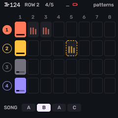
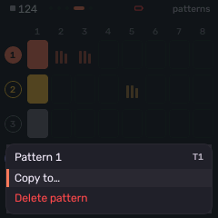
- Hold SEQ and press one of the first eight white keys to select pattern 1–8 (or use the PATTERNS grid / SEQ+SELECT). The playing pattern is lit; ones with notes glow; one waiting for the loop end breathes.
- Hold one pattern key and press another to copy notes, ties, timing, chance, drum hits and motion within the track.
- On PATTERNS, OCT+ opens the sheet: Copy to… (confirm before replacing a used slot) or Delete pattern (confirm). OCT− clears what is queued. Hold SAVE to undo.
- While playing, a pattern change waits until that track’s loop ends. Selecting the active pattern cancels a queued change. STOP applies pending choices.
Songs
On SEQ → SONG, the knobs select section, track, that track’s pattern, and how many times the section repeats (up to 16 rows, repeats 1–16).
- While you jam with no song playing, every loop of track 1 logs the four tracks’ patterns as a section (same patterns again: a repeat).
- Hold REC on SONG (or use Take jam on the sheet) to turn that log into the arrangement. Overwrite asks for confirmation.
- PLAY runs the arrangement; sections change all four tracks at track 1’s loop boundary; the final section stops. STOP returns to the patterns selected before SONG.
- Sheet actions: Insert / Duplicate / Delete section, Take jam, Clear song.
Motion
Knob moves recorded into the pattern: Prophet and CZ-1 Stage knobs and sound pages, FM6 operator and voice pages, and other motion-capable sound and effect controls. On MOTION, KNOB 1 turns playback on or off, KNOB 2 moves between lanes; OCT+ opens a lane’s sheet (Play, Clear lane, Clear all motion).
- Arm REC, start playback, then turn a sound knob. Armed but stopped: the screen shows PLAY TO RECORD MOTION.
- Stopping or bypassing motion restores the original patch; project snapshots keep that original.
- Hold LFO while turning knobs for temporary tweaks that do not record as motion; release to restore, or press OCT+ while LFO is held to keep them.
- Shared pool of 64 events across the project. MOTION is hidden until the selected pattern has events. MOTION FULL when the pool is exhausted.
Recording
- Tap REC to arm or disarm the selected track. Transport stays put.
- REC+PLAY arms and starts in one gesture. An armed track records while playback runs: timing, velocity and held length are kept (including repeats and overlapping chord releases).
- Capture: while the transport runs, Melodee keeps what you play on tracks that are not recording. Hold REC to write the selected track’s last bars into its pattern. An empty pattern takes 1, 2 or 4 bars and sets LEN; a pattern with notes takes its last LEN steps. Hold SAVE to undo. You cannot capture while that track is armed for recording.
- SEQ → TEMPO → QNT snaps recorded playback to a swung grid; OFF (default) restores the original take. The piano roll always shows the original. This is separate from scale QNT on SEL. Track GATE affects manually entered steps.
- A project shares 1,024 timed notes across all 32 banks. RECORDING FULL leaves existing takes intact; clear or replace recorded steps to free space.
Menu preferences: AUDIO CLICK, CLICK LEVEL, COUNT-IN, NOTE PREVIEW and CHORD ENTRY (HOLD vs ADD). Count-in runs with internal clock when starting an armed track; external clock skips it.
Global
Press GLO for the mixer, then again for GLOBAL and SYSTEM. Hold GLO for a quick layer: mute / solo on the keys, TAP tempo (internal clock), and track levels on the knobs; GLO+PLAY restarts from the top without stopping.
| Page | Controls |
|---|---|
| MIXER | KNOB 1–4: LEVEL, PAN, REV (reverb send), MUTE for the selected track. |
| GLOBAL | A4 concert pitch (400–480 Hz, default 440), CLK (INT / USB / TRS), TUNE (fine cents, ±50). A4 and CLK / TUNE are device settings; they survive power-off and stay when you load projects. |
| SYSTEM | MIDI input source (USB or TRS), DRUM channel (OFF or 1–16, default 10), ROUT (CH1-4 or SEL), and CPU info. KNOB 1 also shows USB / TRS receive activity. |
MIDI
USB and TRS MIDI in and out.
- With ROUT CH1-4, channels 1–4 play tracks 1–4; other channels play the selected track. With SEL, everything goes to the selected track.
- The DRUM channel (default 10) plays the first Drum track, independent of ROUT. If there is no Drum track, it plays the selected track. Set OFF to disable.
- The keys send on the selected track’s channel.
- Pitch bend, sustain, panic and clock (INT / USB / TRS) are supported. Common CCs control level, pan, cutoff/brightness, envelope times, glide and effect sends.
- Microtonal MIDI out sends degree addresses; an external synth needs the same tuning and mapping to match.
USB audio
Class-compliant, no driver. In the computer you see:
- Melodee Out — play the computer through the FM-1.
- Melodee In — four mono channels, one per track, after level and before pan (sends and master effects are not in those channels).
16- or 24-bit at 44.1 kHz. Switch either or both off from the HOME menu’s USB AUDIO.
Web editor
Edit the FM-1 from the computer in Chrome or Edge: Open the patch editor.
Connect over USB for sound and mixer controls, a 6-operator FM editor, Prophet and CZ-1 panels, sequencer and motion, library and SysEx import/export, projects, settings, and complete backup / restore. Prefer the editor page for those workflows rather than this manual.
Backup and official firmware
- The installer’s Return to official V15 saves a complete Melodee backup first when the firmware can export one.
- Skip backup is available when export is impossible; confirm that Melodee music, sounds and settings may be lost.
- After reinstalling Melodee, restore from the web editor’s backup tools.
- Older Melodee builds cannot read newer data (for example native motion events need 1.0.2 or later; expanded recordings and some scale IDs need 0.12+). Export Prophet programs and keep the installer’s backup before downgrading.
If something goes wrong
- Install stops or fails: unplug and replug the cable, use a data cable and a direct port, open Chrome or Edge, and press Install again.
- Standard build crashes, freezes, or restarts into update mode: install Single core. Install Standard again later if you want dual core back.
- A unit that no longer starts needs recovery with a Transporter (or equivalent DFU path for the FM-1); the web installer alone cannot revive a dead board.
- Report Melodee bugs on GitHub Issues, not to Felucca or M-VAVE.